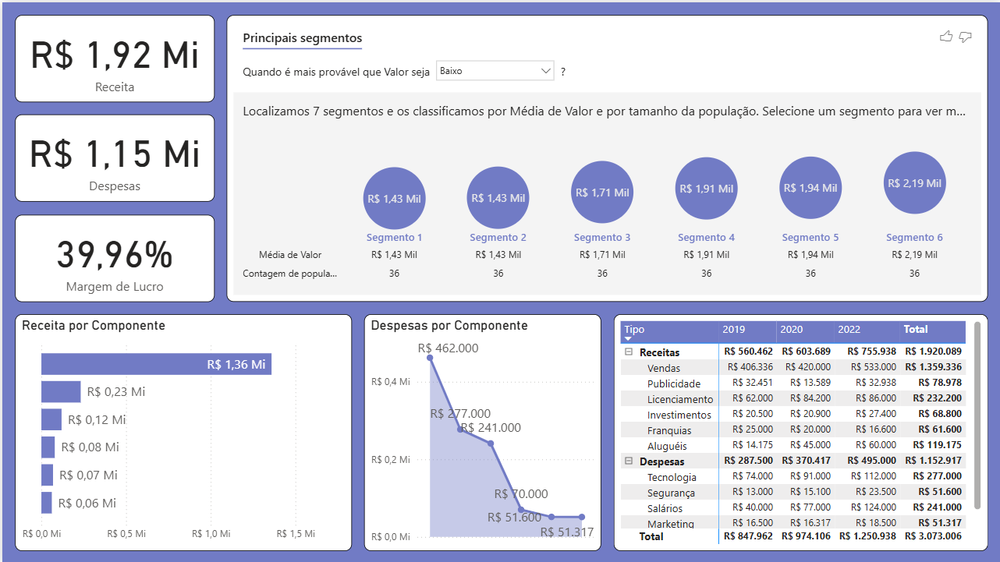
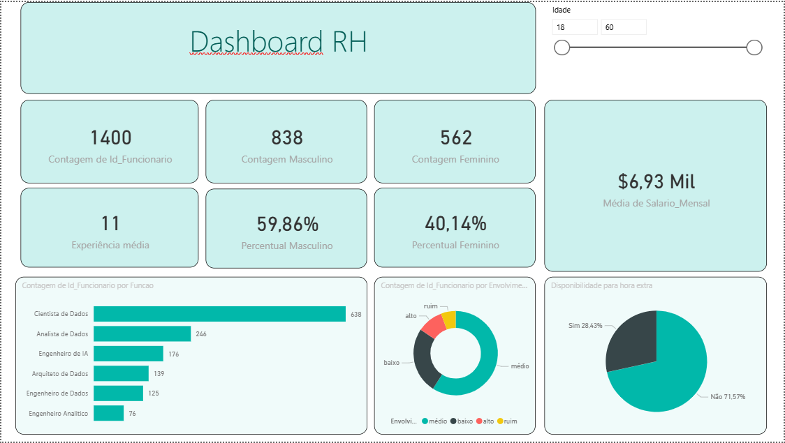
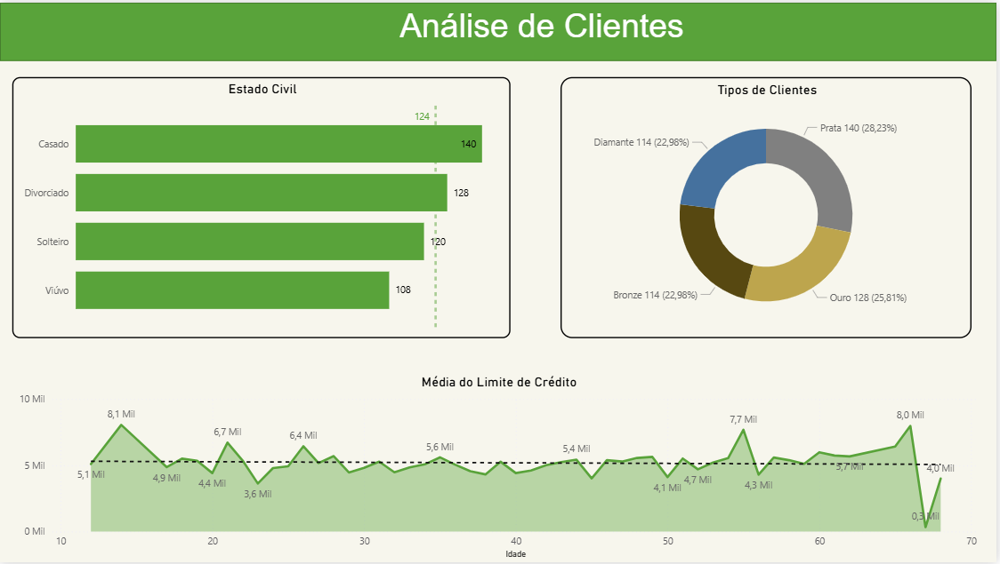

Dashboards
Balance Sheet
Financial overview, presenting revenue and expenses, with a focus on key expenditure categories.

HR Dashborad
Dashboard de RH que apresenta quantidade de funcionários separados por gênero, setor, envolvimento nas atividades da empresa e disponibilidade para horas extras.

Customer Analysis
Fictional dashboard focused on displaying the bank's customer distribution by marital status and loyalty tier, alongside a breakdown of the average credit limit by age.

About
Naturally curious and cooperative, I thrive on solving complex problems with creative approaches. My passion for tech stems from the constant challenge it provides, allowing me to continuously apply and sharpen these skills.
I’m a lifelong learner who believes that constant self-improvement—be it academic or personal—is essential. I make it a priority to carve out time in my routine for learning, always looking to both strengthen my current foundations and explore new tools and methodologies in the tech world.
Meu currículo